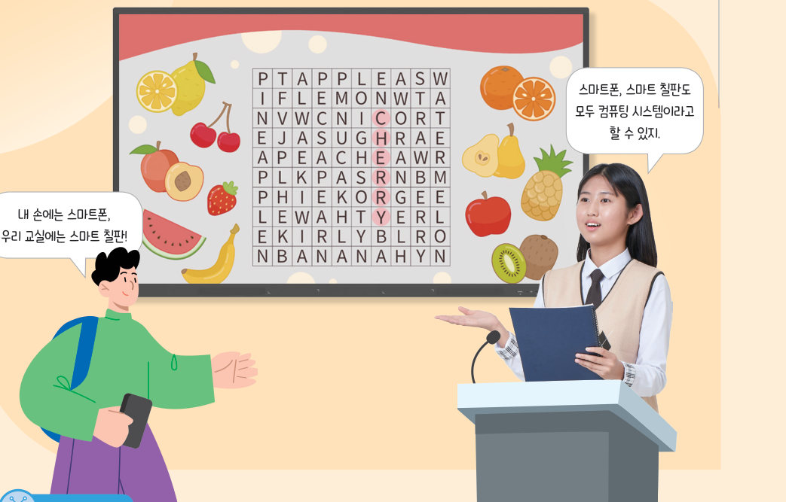
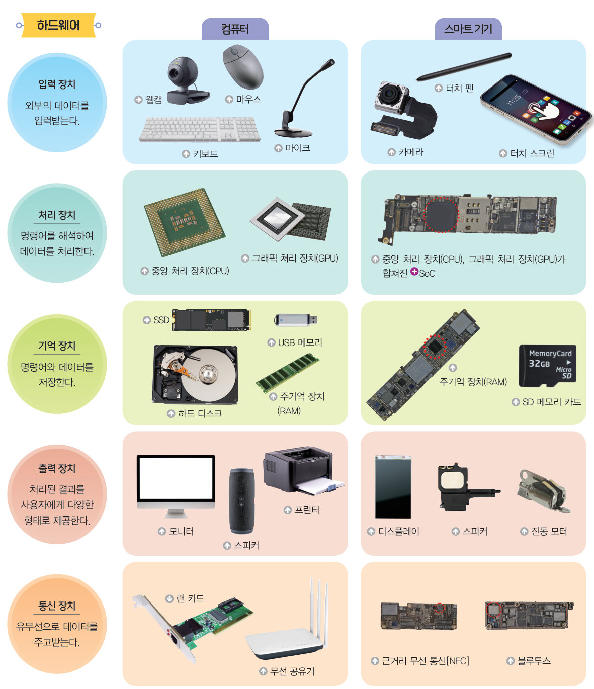
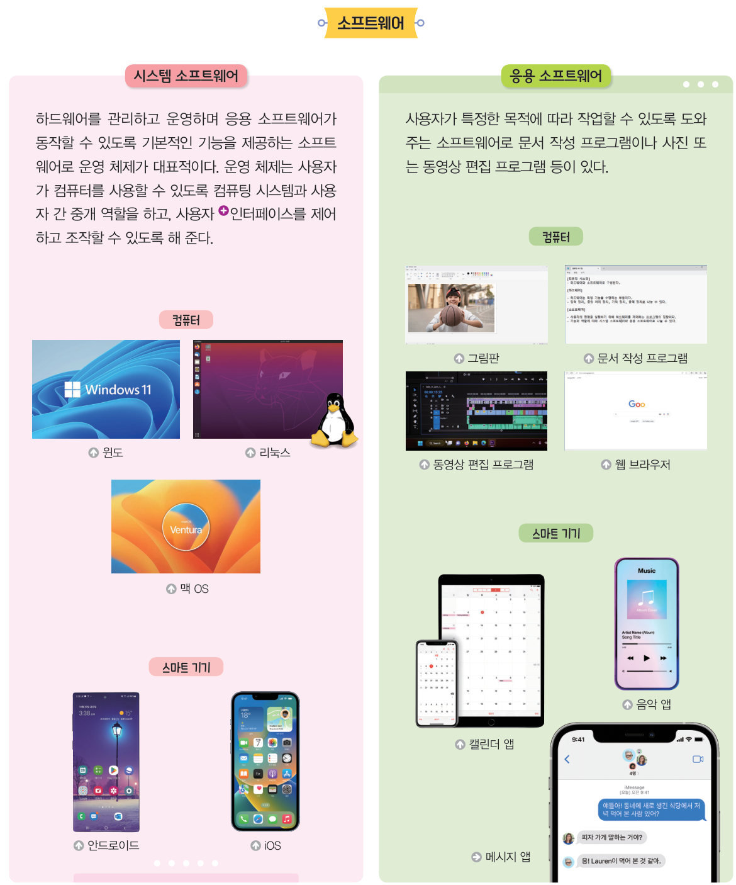
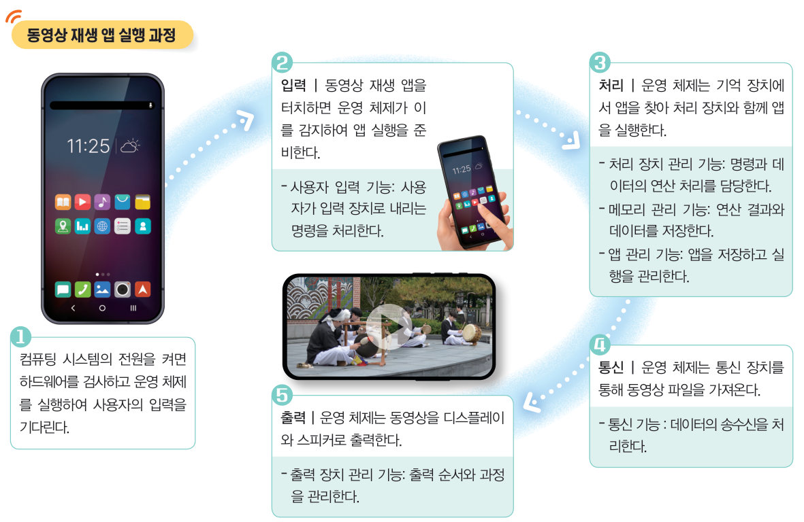
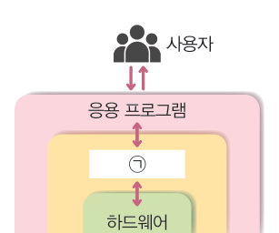

살아있는 교과서 · Ⅰ. 컴퓨팅 시스템 · 1. 컴퓨팅 시스템과 피지컬 컴퓨팅 · 01 6~12쪽
컴퓨팅 시스템의 구성과 동작 원리
스마트폰, 스마트 칠판, 신호등까지 — 우리 주변의 컴퓨팅 시스템은 무엇으로 이루어져 있을까? 데이터가 하드웨어를 여행하는 모습을 따라가고, 하드웨어와 소프트웨어를 분류한 뒤, 가상 스마트폰에서 운영 체제가 동영상 앱을 실행하는 과정을 살펴보자.
🎯 학습 목표 — 컴퓨팅 시스템의 구성 요소와 동작 원리를 설명하고, 운영 체제의 개념과 기능을 분석할 수 있다.
단원 열기컴퓨터는 생활 속에서 우리와 어떻게 상호 작용하고 있을까? 6~8쪽
스마트 화분은 주변 조건을 인식하여 수분과 밝기를 식물이 잘 자랄 수 있도록 맞추어 주고, 반려동물 로봇은 내 말과 행동에 반응하며 움직인다. 컴퓨터나 스마트폰과 같은 컴퓨팅 시스템은 우리의 삶을 편리하고 효율적으로 만들어 주었으며, 이제는 컴퓨팅 시스템이 없는 삶을 상상할 수 없다.

8쪽“내 손에는 스마트폰, 우리 교실에는 스마트 칠판!” “스마트폰, 스마트 칠판도 모두 컴퓨팅 시스템이라고 할 수 있지.”
💭생각 나누기 우리 학교에서 컴퓨팅 시스템이 적용된 것에는 어떤 것이 있는지 이야기해 보자.
교과서컴퓨팅 시스템의 이해 9쪽
우리는 생활 속에서 여러 가지 가전제품을 사용하고 컴퓨터와 스마트폰 등으로 정보를 주고받는다. 이러한 기기들은 사전에 프로그램된 소프트웨어로 하드웨어를 동작시키는데, 이와 같은 소프트웨어와 하드웨어가 유기적으로 결합하여 문제 해결에 활용되는 장치를 컴퓨팅 시스템이라고 한다. (컴퓨팅: 컴퓨터를 사용하여 이루어지는 처리 과정)
컴퓨팅 시스템은 컴퓨터만을 지칭하는 용어였으나 기술의 발달과 함께 컴퓨팅 시스템의 크기가 작아지고 성능이 향상되면서 개인용 스마트 기기, 가정용 제품, 사회 분야 시스템, 인공지능 관련 제품 등으로 그 범위가 확장되고 있다.
그림 I-1생활 속 컴퓨팅 시스템
1다음 중 컴퓨팅 시스템을 모두 고르시오.
교과서컴퓨팅 시스템의 구성 — 하드웨어 10쪽
컴퓨팅 시스템은 하드웨어와 소프트웨어로 구성된다. 하드웨어는 눈으로 보거나 손으로 만질 수 있는 물리적인 전자 장치로 입력 장치, 처리 장치, 기억 장치, 출력 장치, 통신 장치로 나눌 수 있다. (SoC: 하나의 반도체에 CPU·GPU 등 주요 구성 요소를 통합한 칩)

10쪽컴퓨터와 스마트 기기의 하드웨어 — 입력 장치(외부의 데이터를 입력받는다), 처리 장치(명령어를 해석하여 데이터를 처리한다), 기억 장치(명령어와 데이터를 저장한다), 출력 장치(처리된 결과를 사용자에게 다양한 형태로 제공한다), 통신 장치(유무선으로 데이터를 주고받는다)
데이터 여행내가 한 일은 어떤 장치를 거쳐 갈까?
아래 상황을 골라 보자. 데이터가 하드웨어를 차례로 지나가며 각 장치가 반짝여요.
상황을 골라 보세요.
1각 하드웨어는 어떤 장치에 속할까?
키보드
웹캠
터치 스크린
중앙 처리 장치(CPU)
그래픽 처리 장치(GPU)
SSD
SD 메모리 카드
모니터
진동 모터
프린터
랜 카드
블루투스
교과서컴퓨팅 시스템의 구성 — 소프트웨어 11쪽
소프트웨어란 하드웨어를 이용하여 사용자가 요구하는 작업을 수행하기 위한 명령어와 데이터의 집합을 말한다. 소프트웨어는 시스템 소프트웨어와 응용 소프트웨어로 나눌 수 있다.
시스템 소프트웨어는 하드웨어를 관리하고 운영하며 응용 소프트웨어가 동작할 수 있도록 기본적인 기능을 제공하는 소프트웨어로 운영 체제가 대표적이다. 운영 체제는 사용자가 컴퓨터를 사용할 수 있도록 컴퓨팅 시스템과 사용자 간 중개 역할을 하고, 사용자 인터페이스를 제어하고 조작할 수 있도록 해 준다. 응용 소프트웨어는 사용자가 특정한 목적에 따라 작업할 수 있도록 도와주는 소프트웨어로 문서 작성 프로그램이나 사진 또는 동영상 편집 프로그램 등이 있다.

11쪽시스템 소프트웨어(윈도, 리눅스, 맥 OS, 안드로이드, iOS)와 응용 소프트웨어(그림판, 문서 작성 프로그램, 동영상 편집 프로그램, 웹 브라우저, 캘린더 앱, 음악 앱, 메시지 앱)
1시스템 소프트웨어와 응용 소프트웨어로 분류해 보자.
윈도
안드로이드
iOS
리눅스
문서 작성 프로그램
웹 브라우저
동영상 편집 프로그램
캘린더 앱
교과서운영 체제와 컴퓨팅 시스템의 동작 원리 12쪽
운영 체제는 하드웨어 장치와 소프트웨어를 관리하고, 사용자가 하드웨어를 사용하도록 중개하는 시스템 소프트웨어이다. 컴퓨팅 시스템은 운영 체제를 통해 동작하며 입·출력 관리, 처리 장치 및 메모리 관리, 통신 장치 관리, 저장된 소프트웨어 관리 등의 기능을 수행한다.

12쪽동영상 재생 앱 실행 과정
가상 스마트폰동영상 재생 앱을 실행해 보자
[전원 켜기] 다음 ▶ 앱 아이콘을 눌러 보자. 단계마다 운영 체제가 어떤 기능을 쓰는지 오른쪽에 나와요.
1동영상 재생 앱이 실행되는 과정을 순서대로 놓아 보자. (끌어서 순서 바꾸기)
통신 | 운영 체제는 통신 장치를 통해 동영상 파일을 가져온다.
입력 | 앱을 터치하면 운영 체제가 이를 감지하여 앱 실행을 준비한다.
출력 | 운영 체제는 동영상을 디스플레이와 스피커로 출력한다.
전원 | 하드웨어를 검사하고 운영 체제를 실행하여 사용자의 입력을 기다린다.
처리 | 운영 체제는 기억 장치에서 앱을 찾아 처리 장치와 함께 실행한다.
2각 단계에서 운영 체제가 하는 기능을 연결해 보자.
입력 단계
처리 단계
통신 단계
출력 단계
해 보기 · 개별컴퓨팅 시스템의 동작 원리 분석하기 12쪽
내가 스마트폰에서 많이 사용하는 앱을 선택하고 ‘동영상 재생 앱 실행 과정’처럼 그 앱이 동작하기 위한 컴퓨팅 시스템의 동작 원리를 작성해 보자. (예) 지도 앱 — 입력: 지도 앱을 클릭하여 앱 실행을 준비한다. 처리: 지도 앱을 찾아 실행한다. 통신: 입력한 목적지와 위치 정보를 전송한다. 출력: 처리 결과를 화면에 출력한다.
1내가 선택한 스마트폰 앱과 입력 과정
2처리 과정
3통신 과정
4출력 과정
확인 꼭꼭 · 단원 평가하기컴퓨팅 시스템의 구성과 동작 원리 40쪽
✔옳으면 O, 옳지 않으면 X
01 컴퓨팅 시스템을 구성하는 하드웨어에는 입력 장치, 처리 장치, 기억 장치, 출력 장치, 통신 장치가 있다.
02 운영 체제는 컴퓨팅 시스템과 사용자 간에 중개 역할을 하고, 다양한 인터페이스를 제어하고 조작할 수 있도록 해 준다.
01컴퓨팅 시스템에 대한 설명으로 옳지 않은 것은?
02‘다른 장치와 유선 또는 무선으로 데이터를 주고받는 장치’에 해당하는 것은?

40쪽사용자 ↔ 응용 프로그램 ↔ ㉠ ↔ 하드웨어
03컴퓨팅 시스템 구성도에서 ㉠에 해당하는 예시는?
핵심 콕콕 정리하기컴퓨팅 시스템의 구성과 동작 원리 17쪽
1컴퓨팅 시스템의 구성
컴퓨팅 시스템은 입력 장치, 처리 장치, 기억 장치, 출력 장치, 통신 장치와 같은 (와)과 이것을 이용하여 사용자가 요구하는 작업을 수행하기 위한 명령어와 데이터의 집합인 (으)로 구성된다.
2컴퓨팅 시스템의 동작 원리
컴퓨팅 시스템에서 (은)는 사용자의 명령을 받아 하드웨어를 제어하고, 문제 해결을 돕는 역할을 한다.
평가 기준
스스로 평가
컴퓨팅 사고력 컴퓨팅 시스템의 구성 요소를 설명할 수 있는가?
컴퓨팅 사고력 컴퓨팅 시스템의 동작 원리와 운영 체제의 기능을 설명할 수 있는가?
디지털 문화 소양 생활 속에 적용된 컴퓨팅 시스템의 중요성을 설명할 수 있는가?
제출학생 정보 · 제출하기
모든 활동을 마친 뒤 제출하면 전체가 한 번에 채점되고 피드백이 나타나요. 학년을 꼭 적어 주세요 — 답안은 선생님 스프레드시트(내 학년 시트의 정보 탭)에 기록돼요.